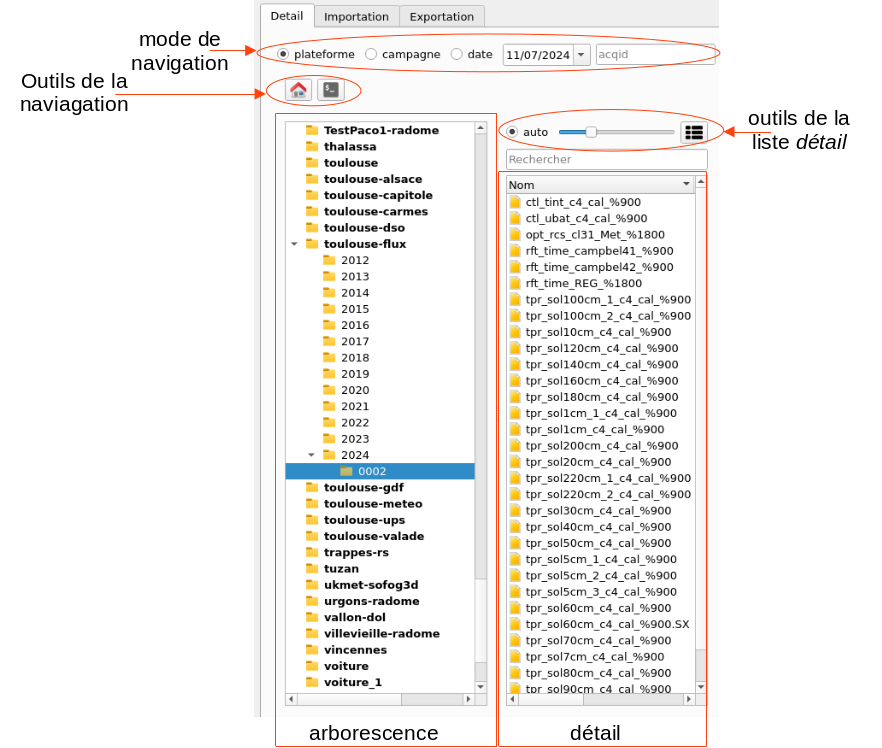

L'interface graphique
La navigation

La navigaton est constituées de différentes parties :
- le mode de navigation
- la liste arborescence (liste de droite) affiche une
arborescence de l'élément sélectionné.
- la liste détail (liste de gauche) affiche une liste du
contenu de l'élément sélectionné à droite.
- les outils de la liste
- les outils de la navigation
note : la liste détail peut contenir plusieurs colonnes dont les têtes
sont manipulables.